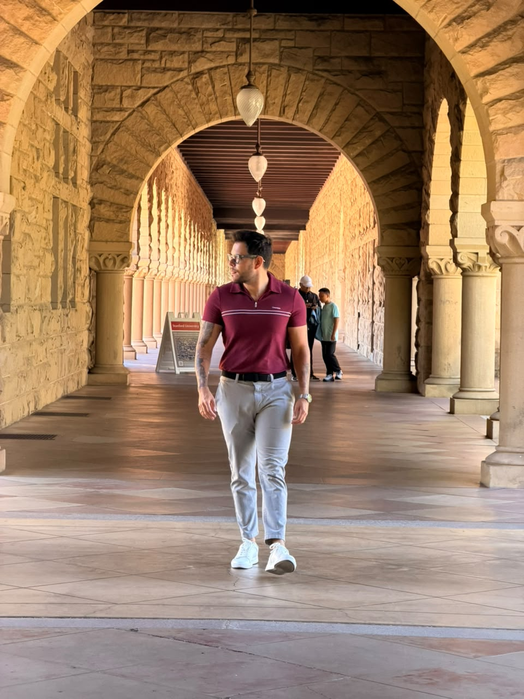

O peso que eu carregava não estava só no corpo.
Eu cresci em Mossoró, no interior do Rio Grande do Norte, sendo o gordinho da família. As piadas vinham de dentro de casa. As roupas que eu queria não fechavam. Praia, pra mim, era o lugar de ficar de camisa enquanto todo mundo entrava na água.
Eu fiz o que todo mundo faz: dieta. Depois outra. Depois outra. Emagrecia, engordava de novo — o famoso efeito sanfona, que não maltrata só o corpo, maltrata a esperança. Até que eu tomei a decisão que parecia ser a definitiva: a cirurgia bariátrica.
E funcionou. Por um tempo.
Dois anos depois, a balança tinha me devolvido quase 20 quilos. Eu tinha operado o estômago — mas ninguém tinha operado a minha cabeça.
Foi aí que caiu a minha ficha: o meu problema nunca foi só o corpo. Era comportamento. E comportamento não se corta com bisturi — se reprograma.
Da minha dor nasceu um método. Do método, uma clínica.
Eu já era fisioterapeuta — formado pela Universidade Potiguar, com pós em fisioterapia dermatofuncional — e trabalhava de dia num banco, a Caixa Econômica, aprendendo na marra o que faculdade nenhuma ensina: atender gente, vender, resolver. À noite e nos fins de semana, eu estudava o que tinha me acontecido.
Dessa obsessão nasceu o SOS Emagrecimento Comportamental: um método que trata o emagrecimento pela raiz que ninguém queria encarar — o comportamento. Três etapas, na ordem que a minha própria história me ensinou:
O método virou atendimento. O atendimento virou a minha clínica de saúde e estética em Mossoró — a Dr. SOS — com protocolos, equipe e uma esteira de cuidado que ia do emagrecimento à estética avançada.
E aí aconteceu uma coisa que eu não planejei: as pessoas começaram a pedir pra aprender comigo. Profissionais da saúde queriam o método, queriam os protocolos, queriam saber como a clínica funcionava por dentro. A demanda pelo online veio antes de eu ir atrás dela.
Virei professor — e depois aprendi a lançar.
Desde 2018 eu escrevo apostila, monto curso, dou aula. Comecei ensinando o que dominava: limpeza de pele, protocolos de estética, eletroterapia, ondas de choque. Cada turma me ensinava a ensinar melhor.
Quando o online abriu a porteira, eu entrei de vez no mundo dos lançamentos digitais. Estudei o jogo a sério — me formei em marketing pela V4 Company em 2022 — e construí, lançamento a lançamento, uma esteira de formações que já ajudou profissionais de estética do Brasil inteiro: a Estética 10X, a formação em harmonização corporal, a Máquina de Agendamento no WhatsApp, o Desafio Mente Magra, mentorias individuais e em grupo.
- Formação em Harmonização Corporal de Emagrecimento — Estética10X curso
- Bases da Estética10X curso
- Máquina de Agendamento no WhatsApp 5 em 7 curso
- Imersão Intradermo10X na Prática curso
- SOS Detox Ortomolecular curso
- SOS FlaciUP curso
- Hidrolipo curso
- Atualização em Criolipólise e Criotermogênese curso
- Mentoria Individual com Dr. Sóstenes consultoria
Essa fase me deu algo que pouca gente da saúde tem: anos de prática real em marketing, copy, funil e venda — não a teoria, a operação. Eu escrevi as páginas, gravei os CPLs, montei as ofertas, olhei as métricas às 2h da manhã. Errei muito, ajustei sempre.
Sem essa fase, nada do que veio depois existiria.
No papel: biomédico e fisioterapeuta. E faço questão da precisão.
Deixa eu dizer com todas as letras, porque eu mesmo corrijo quem erra: eu não sou médico. Sou biomédico e fisioterapeuta. Duas graduações completas — Fisioterapia pela Universidade Potiguar, Biomedicina pelo Centro Universitário UNIBTA — e uma pós em fisioterapia dermatofuncional e estética.
Em 2020, no auge da pandemia, servi como fisioterapeuta no serviço público de saúde do Rio Grande do Norte. Em 2025, comecei Medicina na Europa — e em 2026 tomei uma das decisões mais difíceis da minha vida: pausei o curso no segundo ano.
Não porque desisti da saúde. Porque eu vi uma janela se abrindo que não ia esperar seis anos de faculdade: a inteligência artificial estava mudando a medicina agora, na minha frente. E parece que a gente tem que seguir aquilo que as pessoas esperam da gente — o diploma, a linha de produção profissional. Eu escolhi o caminho fora da média.
Credencial importa — por isso eu digo exatamente as que tenho. Mas quem decide o impacto que você causa não é o título. É a coragem de construir.
A aposta: IA aplicada à saúde — de verdade, não de modinha.
Eu não gosto de modinha. Quando eu decidi mergulhar em IA, não foi pra postar print de robô — foi pra responder uma pergunta que me persegue desde a clínica: por que o cuidado em saúde ainda perde tanto tempo, tanto paciente e tanta oportunidade em processo manual?
Então eu fiz o que fiz a vida inteira: virei aluno de novo. Estudo diário, certificação pela Anthropic em 2026, e a regra que rege tudo que eu construo — a IA que importa não é a que impressiona em demo, é a que melhora o serviço final: o paciente melhor atendido, a agenda cheia, a clínica que não depende de indicação.
Uma coisa eu trouxe intacta da minha história: método. Do mesmo jeito que o SOS desprograma, reprograma e implementa comportamento, eu aplico IA em cima de problema real, testo pequeno, meço e só então escalo. Fui apresentado ao mundo de possibilidade através do estudo — e é pelo estudo que eu continuo entrando nas salas onde o futuro é construído.
A linha do tempo, sem inflar.
Cada data abaixo é verificável. O histórico completo está no LinkedIn.
- Fisioterapia — Universidade PotiguarMossoró, RN. A base clínica de tudo.
- Caixa Econômica Federal — gerente assistenteA escola de atendimento, processo e venda.
- Pós em Fisioterapia Dermatofuncional e EstéticaUnyleya.
- Clínica e gestão em saúde e estética — Dr. SOS / TrattareMossoró, RN. Método SOS, protocolos, equipe.
- Biomedicina — Centro Universitário UNIBTASegunda graduação, ênfase em estética.
- Professor e mentorApostilas, cursos presenciais e as formações digitais (Estética 10X e catálogo Hotmart).
- Fisioterapeuta no serviço público — Governo do RNLinha de frente na pandemia.
- Formação em marketing — V4 CompanyTCC aplicado ao negócio real da clínica.
- Medicina — iniciada e pausada no 2º anoA decisão difícil que abriu a fase atual. Não sou médico.
- Certificação Anthropic + fundação da ZatheonIA aplicada à saúde, construída em público.
45 dias no Vale do Silício, construindo em público.
Enquanto você lê isso, eu estou em San Francisco, numa imersão de 45 dias no coração da IA mundial — conhecendo fundadores, entrando em eventos, testando ferramenta no dia em que ela lança. E documentando tudo, um vídeo por dia, no @drsostenes, onde mais de 30 mil pessoas acompanham essa jornada.
Não vim passear. Vim construir a Zatheon — o ecossistema que une tudo que essa história me ensinou: saúde por dentro, venda na prática, ensino e IA aplicada.

O gordinho que escondia o corpo na praia virou o cara que constrói o próprio futuro em público, com o mundo assistindo. Não porque ficou fácil — porque eu aprendi, lá atrás, que vergonha não se vence escondendo. Se vence tomando coragem.
"Não deixe virar normal aquilo que um dia, para você, parecia um milagre."
— Sóstenes Costa Paiva, biomédico, fisioterapeuta e fundador da Zatheon